All course topics · Practice companion
23. Rapid Setup Lifecycle Events
Detect a business transition and select its response
Joiners enter the organization, movers change responsibilities or reporting context, and leavers leave. The diagram connects aggregated source changes and refresh event processing with lifecycle workflows; UI-created/edited identities can also enter configured event paths.
Prepare the supporting roles, populations, workgroups and email templates, then define application-specific actions and global triggers/behavior. A trigger without the intended actions is incomplete, and actions without correctly limited eligibility can affect the wrong identities.
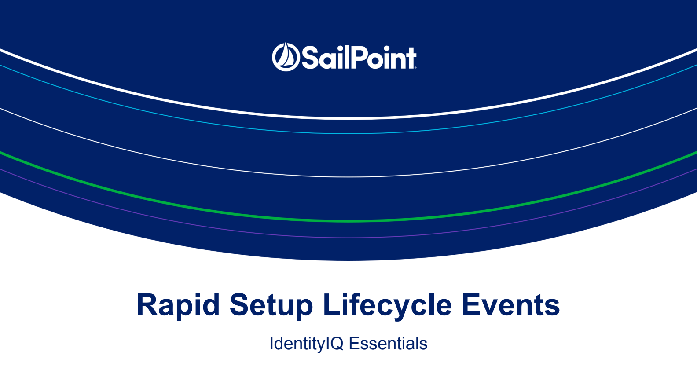

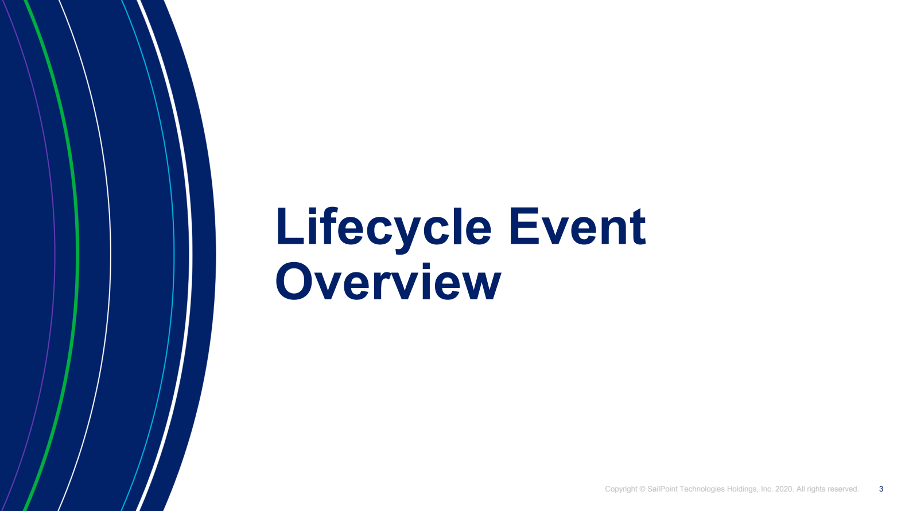
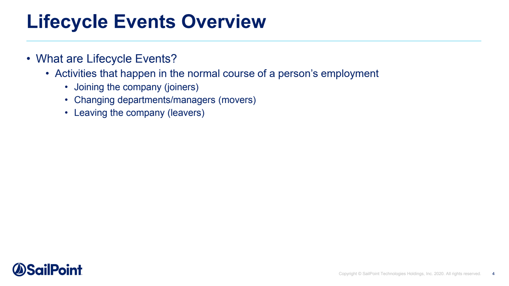
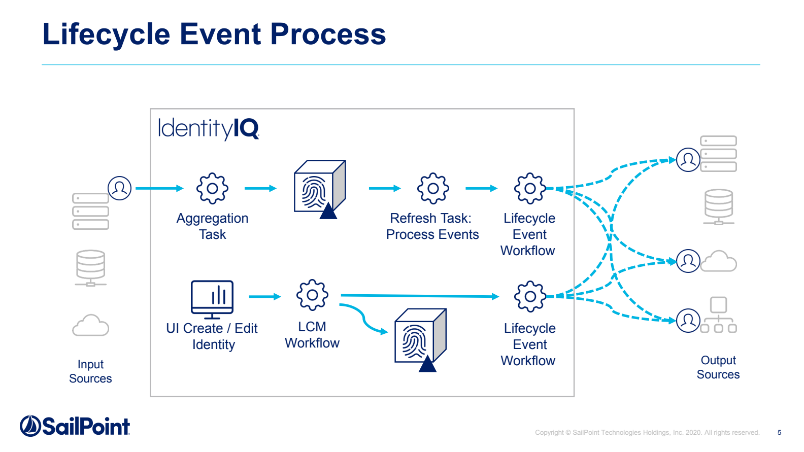
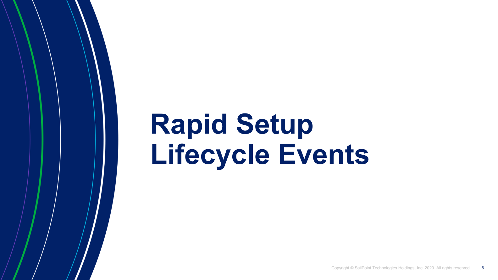
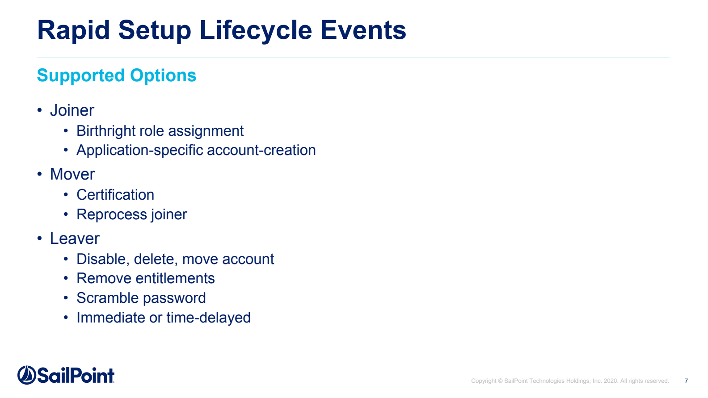
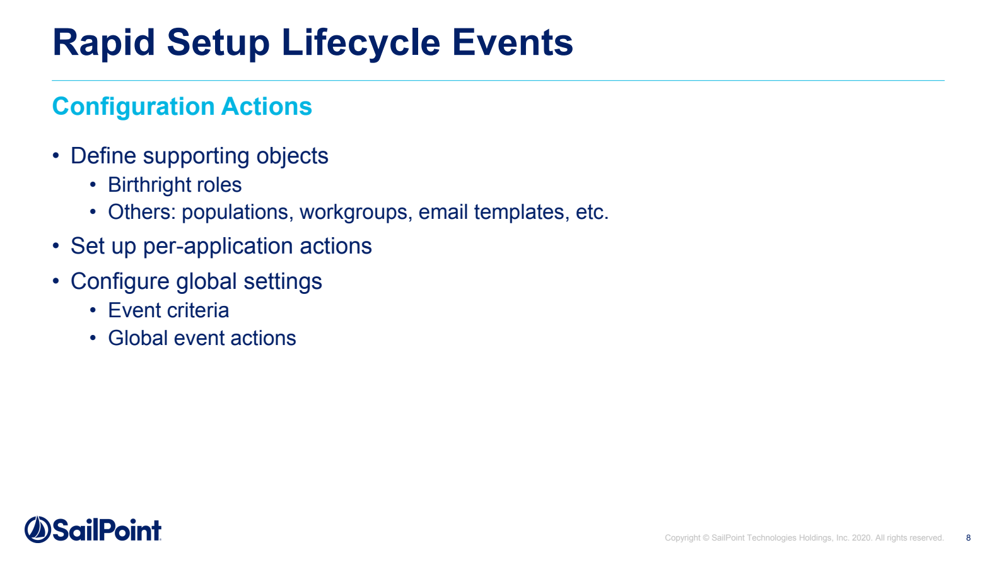
Joiner
Configure eligible identity sources, normally authoritative applications. Joiner processing can assign birthright roles or create application accounts without a role-based entitlement request. Per-application instructions and password-related notification content complement global approval, workflow, recipient and template settings.
Trigger filters further constrain eligible identities. The course also shows controls for IdentityIQ-created identities and uncorrelated identities. Their scope matters when the system contains records that should not be treated as ordinary new employees.


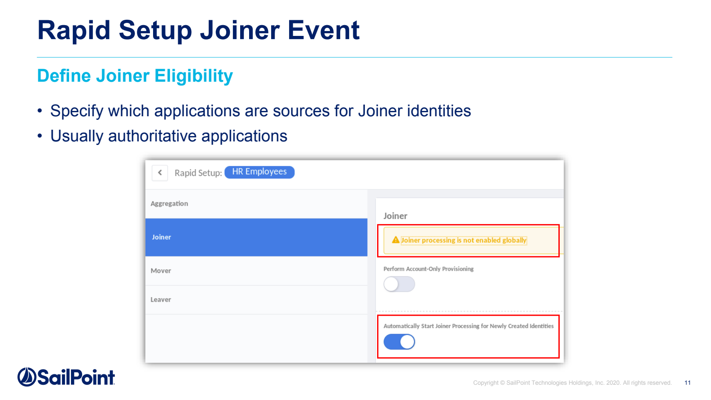
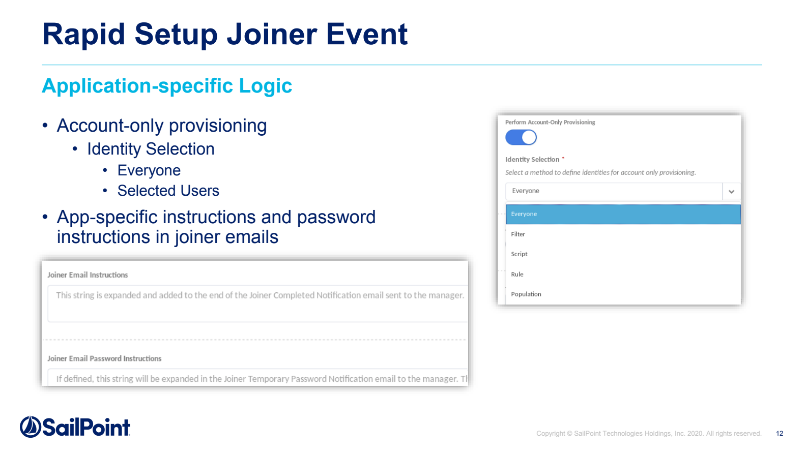

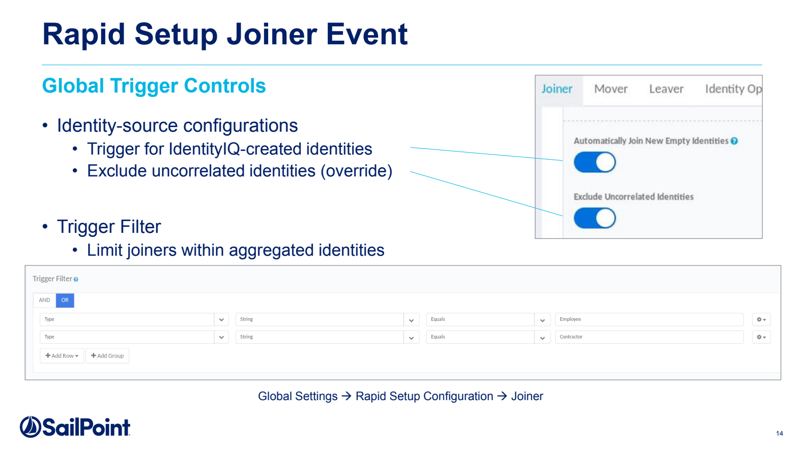
Mover
Mover criteria can monitor manager, department or job-title changes, a designated flag, or a targeted combination such as region plus a job change. Responses include generating a manager access review and reprocessing selected joiner logic. Certification staging, owner, backup certifier and previous-manager participation are separate controls; per-application settings decide which access appears in that review.
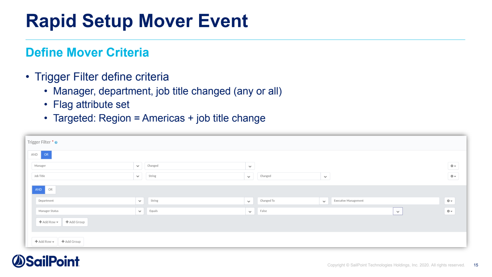

Leaver
Leaver criteria can detect inactive changing from false to true or another defined flag. Global actions include removing assigned roles, reassigning owned artifacts and service/bot identities, approval and notifications. Application actions can disable/delete accounts, remove selected entitlements, scramble passwords or perform supported directory moves. Some actions can be delayed.
Password scrambling must produce values the target application's password policy accepts. Disabling an account, removing entitlements and deleting an account have different consequences; the course presents them as configurable operations rather than synonyms.
Exercises 4.2 and 4.3 configure joiner/mover behavior, introduce sample changes and verify requests, transactions, identities, certifications, audits and email output. Exercise 4.9 later tests the leaver path.
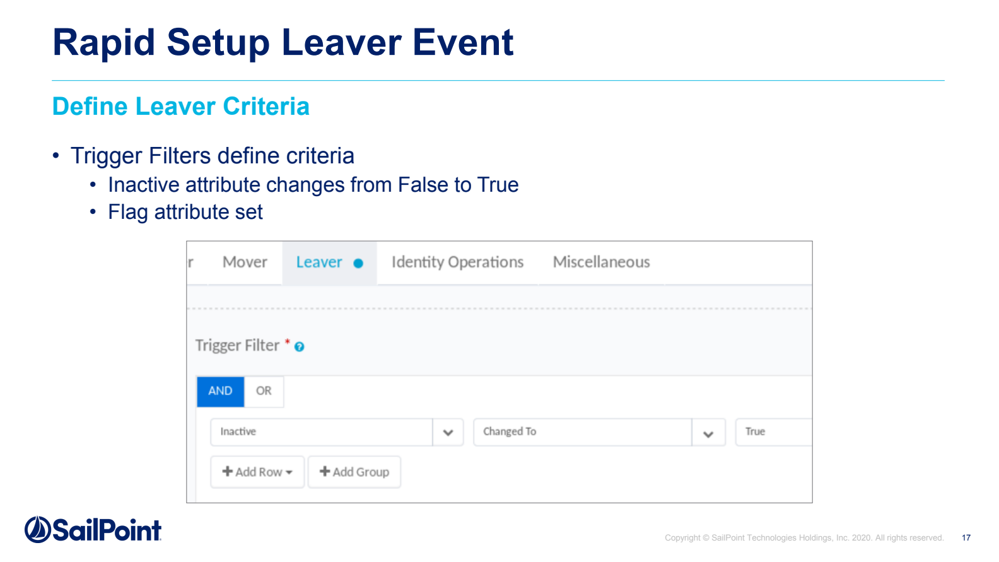

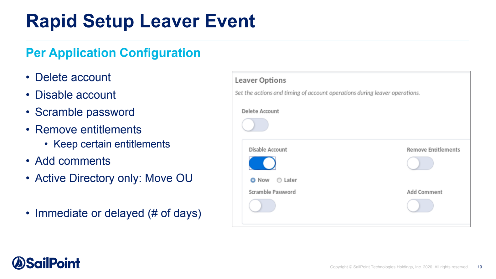


Related practice and source pages
Section Four — overview and contents · Exercise 4.2 — Joiner Lifecycle Event · Exercise 4.3 — Mover Lifecycle Event · Exercise 4.9 — Leaver and Immediate Termination